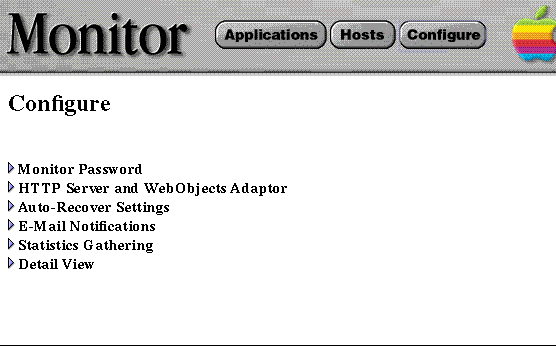
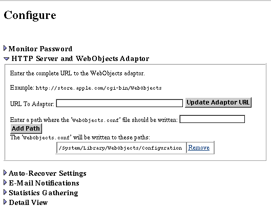

Table of Contents
Table of Contents  Next Section
Table of Contents
Next Section
Table of Contents  Previous Section
Previous Section


This URL should include the web server from which clients will access applications plus the remaining portion of the URL up to the WebObjects adaptor.
Table of Contents Next Section